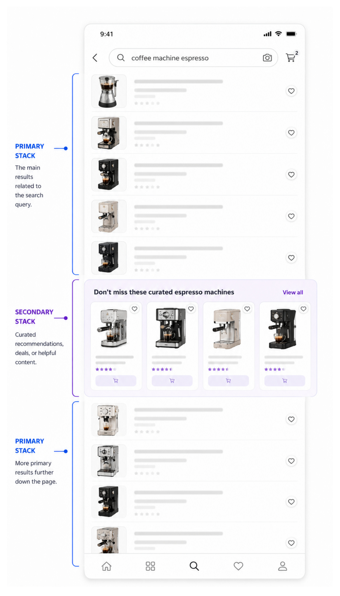
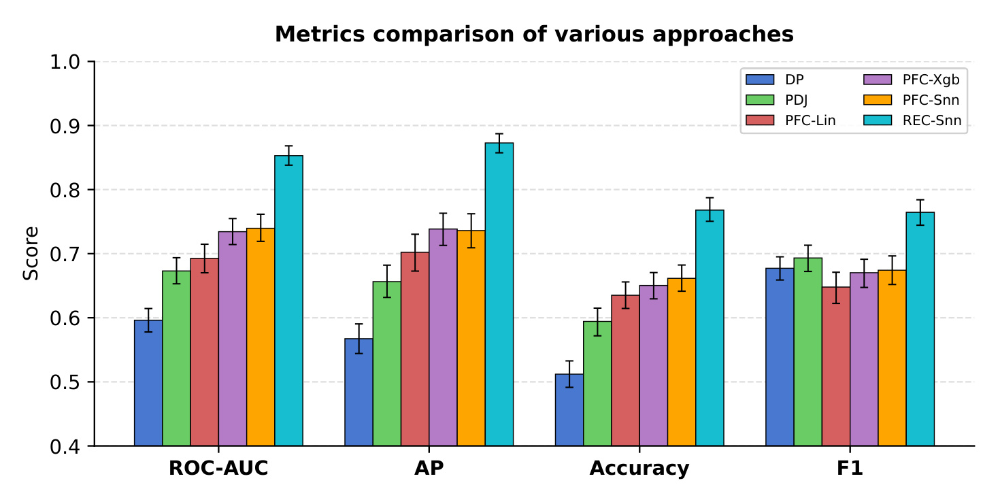
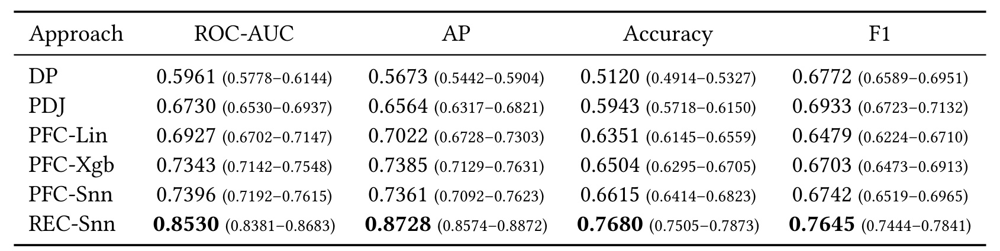
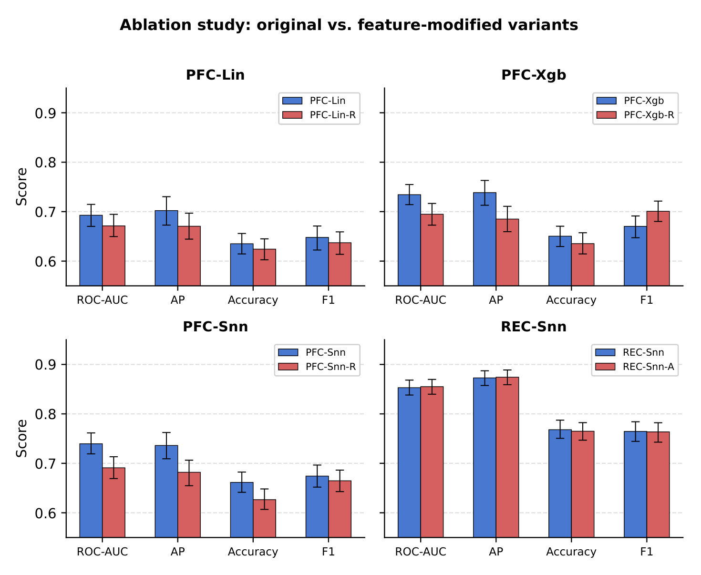
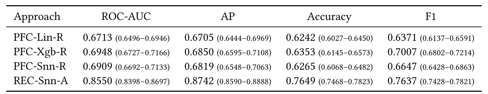

Language Models for Page-Level Layout Decisions in E-commerce Search
A Study of Prompt-Based and Representation-Based Methods｜电商搜索页面布局的语言模型离线评估
作者：Varun Joshi、Eva C. Song、ChengXiang Zhai。一作主机构为 Walmart Global Tech，合作机构为伊利诺伊大学厄巴纳香槟分校。论文入口：arXiv:2610.10920。arXiv v1 公开日期为 2026 年 10 月 7 日；论文首页标注 RecSys 2026 OARS Workshop，活动日期为 2026 年 9 月 28 日，两种日期分别对应预印本公开与研讨会信息。阅读记录日期：2026 年 10 月 14 日。正文共六页；本轮未核验到独立公开代码或数据入口。首页 DOI 是出版模板占位符，不能作为已核验 DOI。
电商搜索页适当地插入推荐模块可以帮助用户发现商品，但位置不当会打断浏览、损害主结果体验；页面布局同时牵涉多个组件与界面约束，离线判断何时、何处插入模块仍然困难，往往依赖成本较高的在线实验。
1. 背景和问题
1.1 从商品排序到页面整体呈现
这篇研究的对象是一个很具体的搜索界面：用户输入查询后，页面首先提供纵向排列的主要商品结果，在某个位置插入横向商品轮播，之后继续显示主列表。论文把纵向主结果称为主栈，把插入的轮播称为次栈。主栈承担直接回答搜索需求的任务，次栈则展示精选商品、替代商品分组或其他有助于发现的内容。这里的动作不是改变某一个商品的排序分数，而是决定要不要在整个页面中加入一个模块；它会同时改变后续主结果的位置、用户的滚动路径以及可见商品之间的竞争关系。因此，即便主结果列表保持原来的顺序，页面整体体验也可能发生变化。
传统查询与商品相关性能够判断某件商品是否满足需求，但单件商品相关性不能完整回答次栈的页面价值。一个轮播内的商品可能都与查询有关，却与前面的主结果重复，或者在用户已经即将看到优质主结果时占据额外空间。相反，轮播本身并不比主列表中的每个商品更相关，也可能通过清楚的分组标题提示另一种需求方向。论文关心的是这些内容信号与位置约束结合后，能否产生与用户行为一致的离线判断。对搜索推荐一体化而言，这个任务把排序后的展示层纳入评估范围，而不是把模块效果简单归结为商品质量。

图 1 以咖啡机搜索为例，蓝色括号标出插入位置上方与下方的主结果，紫色括号标出中间的横向推荐轮播。用户可以继续纵向浏览主结果，也可以在轮播内横向查看其他商品；两类内容因此共享屏幕的纵向空间，却提供不同的浏览动作。图中的商品、查询框、模块标题以及主栈延续部分共同说明，次栈不是独立的推荐首页，而是主搜索结果流程中的一段插入内容。它可能让替代商品被更早发现，也可能推迟下方商品的曝光。图内的主栈和次栈说明属于原始示意图，本身不能证明示例轮播有效；它的证据角色是界定界面和决策对象。
再看轮播的高度，基础提示说明其约占普通商品卡片一点五倍的纵向空间。这个描述把布局成本引入评估：用户绕过次栈并不是一个无成本动作。与此同时，论文没有给出页面像素尺寸、具体滚动速度或实际眼动数据，不能从示意图反推出精确耗时。阅读图 1 应当保留这种粒度：它显示真实任务的结构关系，支持对位置和浏览中断的讨论，但不是一项证明推荐模块增益的用户实验。对后面标签规则的理解也依赖这一点，作者只能通过下方商品的加购推断用户经过了模块，不能直接观察用户是否认真阅读了每个推荐商品。
1.2 可观察行为与布局优劣之间的距离
引言指出，排序评估已有比较成熟的技术，而布局变化将多个页面组件和界面约束耦合起来，验证通常需要在线实验。历史日志可以提供高质量行为信号，但它只记录曾经真实展示过的布局。对于没有投放过的新位置或新模块，日志没有对应的用户反馈。这促使作者探索语言模型能否利用查询、商品和模块描述提供可扩展的离线评估。研究随后选择了一个可检验的起点：把已有展示日志转成二分类样本，比较不同语言模型使用方式预测历史参与行为的能力。
论文在文字上讨论“有次栈是否优于无次栈”，实验标签却来自已经显示次栈的页面；历史行为分类与同一用户在两种布局下的因果比较之间仍有距离。某个用户在次栈中加购，表明次栈捕获到了该次请求的有效互动，但不等于没有次栈时这次加购就不会发生。某个用户跳过次栈、在下方主结果加购，也不等于次栈必然降低总转化，它可能没有帮助，也可能提供了未被加购指标记录的发现价值。笔记把这一点提前说明，是为了让后文的分类分数始终对应正确的测量对象。
作者用加购作为积极用户体验的代理信号，而不是点击、购买、停留时长或满意度。加购相对点击更接近购买意图，但它仍然只是行为链条中的一个环节。论文并未建立加购与最终成交、订单金额或长期留存之间的映射；也没有对没有加购的用户进一步调查原因。因此，研究的贡献是构造了一套行为锚定的离线布局预测任务，并比较不同表征与判断路线，而不能扩大成覆盖全部用户体验维度的综合界面评估。
1.3 三条语言模型路线要回答的经验问题
论文把模型路线分成三类。第一类直接让指令模型回答布局是否有益，第二类先让同一模型按若干因素打分，再用历史行为标签训练分类器，第三类把同样的页面文本交给预训练编码器获得连续向量，再训练浅层分类器。这个比较有一个清楚的研究问题：对于页面布局，语言模型给出的自然语言判断或离散评分，是否已经保留了最有用的行为预测信息，还是连续的语义表征更适合交给下游监督模型使用？它也检验了“显式分解判断因素”是否能让直接判断改善，以及页面位置等结构属性是否在评分过程中被压缩丢失。
相关工作主要涉及商品相关性裁判、界面设计反馈和布局理解，论文则把评价目标落在有具体插入位置的页面与历史加购行为上。界面反馈任务可以判断设计是否整洁、视觉上是否合理，相关性任务可以判断查询与商品的匹配，而这里要求结合主次商品、模块类型和位置判断一次页面请求的行为标签。这解释了为何通用设计常识未必足够：模型可能能讲出推荐轮播的益处，却难以确定当前主列表已经满足了多少需求，或用户是否愿意付出额外滚动成本。
这是一篇短篇经验研究，重点是比较路线及寻找信息损失来源，原文没有提出新的大模型架构、预训练目标或在线布局优化算法。它的价值也因此适合从实验设计上评估：页面输入是否一致，监督信号是否一致，下游分类器是否可比，结果是否支持作者的解释。最后的证据仍来自单平台、单周、单次栈页面，候选新布局的离线泛化是动机而非已经被充分验证的结论。带着这些边界阅读，可以同时理解其实际工程意义和结论所依赖的条件。
2. 方法
2.1 问题形式化与加购标签
原文第三节把一次页面请求表示为查询、主要商品序列、候选次栈和插入位置。基线是不插入次栈的主列表，测试布局是在主列表某一位置加入整个次栈。保留原文记号，其页面关系为：
符号解释：$P$ 是按既定顺序排列的 $n$ 个主结果商品，$p_j$ 是其中第 $j$ 个商品；$S$ 是由 $k$ 个商品组成的次栈，$s_j$ 是第 $j$ 个次栈商品；$i$ 表示次栈插在多少个主结果之后。查询 $q$ 负责界定需求，次栈标题 $m$ 描述模块所表达的分组含义。这个表示强调布局动作在商品序列之外额外插入模块，而不是重新训练商品排序器。
符号解释：$A_i$ 是含次栈的测试布局，$B$ 是不含次栈的基线布局。$i=0$ 表示在所有主结果之前插入，$i=n$ 表示在主列表之后插入；括号内的 $S$ 是一个横向轮播模块，不是把次栈内每件商品变成普通纵向结果。数学上可以构造两种布局，但数据并未对每次请求都观察到 $A_i$ 与 $B$，所以形式化的比较目标不意味着拥有成对反事实样本。
监督标签采用从上到下的滚动假设。次栈上方主商品的加购不能确认用户到过次栈，因此这部分事件不用于判断次栈是否被看见。作者只关心次栈自身的加购，以及插入位置下方主结果的加购。按照原文三条规则，可等价写为：
符号解释：$y$ 是保留样本的二分类标签；$\mathrm{ATC}_S$ 表示用户是否在次栈商品上加购，$\mathrm{ATC}_{P^+}$ 表示是否在次栈位置下方的任一主商品上加购，$\mathrm{discard}$ 表示删除无法确认经过次栈的请求。第一条规则优先成立，因此用户在次栈与下方主结果都加购时仍为正例。负例要求用户未在次栈加购、却在下方主结果加购；它通过下方行为支持“经过次栈”的推断。两处均无加购时，不能简单把请求当作次栈无效，而要丢弃。
这个方案减少了把“用户根本没滚到次栈”误当作“用户看到但不喜欢”的噪声，同时也改变了被研究的人群：保留的是能够通过加购确认次栈或下方区域产生互动的请求。它没有证明所有保留用户都认真阅读模块，也没有覆盖看过模块但全页都不加购的会话。特别是位于主列表最后的次栈，下方主结果可能为空，对负例形成的条件有影响；原文没有单独报告各位置的样本量，这只能作为规则的逻辑边界，不能说实验已经出现某种位置偏差。输入是页面文本与日志事件，输出是标签或丢弃决定，这是整个训练比较共同使用的基础。
2.2 直接提示与分解判断
第四节第一部分使用 Mistral-7B-Instruct-v0.3。所有路线的页面文本都来自统一的结构化上下文：查询、次栈名称、插入位置、次栈商品数，以及主次栈商品的标识、标题、品牌和价值属性。系统提示另外解释单列连续滚动的 iOS 搜索页面、普通卡片与轮播的空间关系、六种次栈类型和位置含义。商品价值是输入字段，并不等于作者已经定义了可公开复现的价格价值指标；六种模块在展示的提示中以匿名名称和省略号表示，完整业务定义并未公开。
直接提示路线 DP 要求模型输出一个零到一的浮点评分和一句二分类结论。给出的示例覆盖了两类结论与若干评分，但这些示例是输出格式示例，不能解释成大量已标注的行为训练数据。页面位置说明还给出一个直觉：某个次栈在第十二个主结果之后可能有帮助，而在第四个之后可能打断后续优质商品。这是引导模型考虑位置的提示内容，不是论文已经验证的具体最优位置。模型在推理阶段利用上述文本生成判断，不需要从此次日志训练分类器。
分解判断路线 PDJ 保持页面上下文一致，在系统指令中要求评估六个因素：意图匹配、商品标题相关性、品牌流行度、商品价值与用户需求的匹配、主次栈重复，以及浏览中断成本。各因素采用三档评分。这个设计让模型先产生中间评价，再生成总分与结论，希望类似逐步判断的方式可以降低直接评价的不稳定性。PDJ 的中间输出提供了监督分类器可用的特征，但提示本身仍由语言模型决定如何把因素合成最终评分。实验后来检查了这种合成方式，而没有直接假设分解因素等价于最优预测。
这里存在一个值得复现时保留的符号方向问题。意图匹配等因素的高分通常表示更好，低中断成本也得到高分，但重复因素把严重重叠记为二分、没有重叠记为零分。也就是说，六个评分的方向并不天然一致。若把它们同方向等权相加，重复越多反而可能提高总分。论文没有展示足够细节来判定模型是否反向处理了重复因素，更没有给出调整后的复现实验；因此不能替作者修正原始评分定义，也不能把这个观察写成已确认的性能根因。它提示读者检查评分语义与标签的对应关系，而不只检查提示是否包含了相关因素。
2.3 提示特征分类与表征分类
第四节第二部分的 PFC 不再直接采用 PDJ 最终判断。它先在训练请求上生成分解评分，然后把这些评分交给轻量分类模型，以真实加购标签监督学习。主实验还包含已经出现在提示中的显式页面属性，消融再移除这些属性：次栈类型、插入位置、次栈大小和重复商品数量。线性模型、XGB 与浅层神经网络分别形成 PFC-Lin、PFC-Xgb 和 PFC-Snn。这里的语义转换有两步：大模型把丰富商品上下文压缩成有限因素，分类器再学习这些因素如何对应行为。它的监督发生在下游，而不是对 Mistral 进行行为标签微调。
PFC 的实际含义是把“如何合成评分”交给历史数据学习。某项评分对点击或设计观感有用，不一定对加购有用；不同因素还可能随模块类型或位置产生交互。非线性分类器可以表达部分这样的关系，线性分类器则更依赖输入特征的线性可分程度。论文没有披露足够的特征编码、缺失值处理和模型超参数，不能据模型名称补出这些实现。训练阶段需要生成训练集评分并拟合下游分类器，预测阶段也需要对新请求生成相应评分后分类；因此它仍包含指令模型推理过程，只是最终二分类由监督模型承担。
第四节第三部分的 REC 把相同页面提示文本交给预训练 ModernBERT，获得搜索页语义向量，再接一层含三十二个隐藏神经元的浅层网络完成分类。作者在讨论中把编码器称为冻结文本编码器，故可确认这条路线主要利用已有连续表征与轻量监督头。正文未提供向量池化、序列截断、激活函数、具体损失或优化器，不能把通用二分类交叉熵当作该论文的已披露核心公式。本文没有可复用的核心优化公式；以上展示的是原文任务与标签数学记号，模型训练目标的代数形式未公开。
REC 的输入并没有新增页面截图，它仍使用文本化的商品和结构属性。因此，不能把其优势解释成视觉模型识别了像素布局。可能的优势是连续向量保留了被六个离散评分压缩掉的上下文关系，让浅层分类器更容易学习与加购相关的模式。训练阶段生成或使用编码向量并拟合分类头，预测阶段对新页面文本编码后输出分数。与直接提示相比，这条路线明确依赖已标注日志；与 PFC-Snn 相比，作者强调标签、划分与下游分类器架构一致。不过前端模型分别是 ModernBERT 和 Mistral，两者的预训练与结构不同，实验能支持这组具体方案的比较，不能分离出纯粹的“连续向量格式”因果效应。
3. 实验结果
3.1 数据、指标与统一比较口径
数据取自 Walmart.com 一周搜索流量，只选择页面上恰好显示一个次栈的请求。按前述规则标注后，共有一万一千个唯一请求，随机划分为八千八百个训练请求和两千二百个测试请求，正负标签保持平衡。作者将唯一请求划分描述为避免跨集泄漏，但没有报告按用户、查询、商品或时间分组的独立划分；唯一请求没有跨集重复，不等于相同用户或相似查询也完全隔离。论文也没有披露原始请求总量与丢弃比例，读者不能由保留样本数量推断覆盖了多少全站流量。
DP 和 PDJ 无需该批标签训练，而 PFC 与 REC 使用标签学习下游分类器。因此，DP 到 REC 的差距同时包含监督方式、输入表征和模型的差异。更严格的对照是 PFC-Snn 与 REC-Snn：它们使用相同训练测试标签与同类浅层分类器，主要区别来自上游评分特征与编码向量。但是上游编码器不同、输入维度不同仍需保留。数据平衡也使随机排序的平均精度基准接近二分之一，这与真实流量中的次栈加购率可能不同，原文没有提供自然基率下的评估，不能把测试精度视为线上预测概率已经校准。
结果给出 ROC-AUC、平均精度 AP、阈值零点五下的 Accuracy 与 F1，以及百分之九十五的自助法置信区间。ROC-AUC 关注正负样本的排序，AP关注高分区域的正例识别，Accuracy 反映固定阈值的总体分类正确率，F1 汇总正类精确率与召回率。四者回答的问题不同，特别是偏向正例的模型可能有不低的 F1，却缺乏负类识别能力。置信区间反映当前测试样本重采样下的估计波动，不覆盖换平台、换周或新增模块带来的分布变化。

图 2 按四种指标分组，六种颜色分别对应直接提示、分解提示、三种提示特征分类器和表征分类器。最醒目的现象是 REC-Snn 的青色柱在四组中都最高，且相对提示特征路线的差距大于误差线呈现的测试采样波动；优势没有仅集中在某一个固定阈值指标上。DP 的准确率接近平衡任务的基准水平，而它的 F1 却在零点六以上，这提醒读者不要用单个正类指标判断布局评估器是否可靠。图中的 AP 和 AUC提升说明排序能力更强，Accuracy 和 F1改善则说明在作者规定的阈值下也更接近标签。
从 DP 到 PDJ，四组柱都提高，但从 PDJ 到 PFC 不同分类器时，F1 并不单调提高；线性提示分类器的 F1 比 PDJ低，而其 AUC、AP、Accuracy更高。这并不矛盾，模型排序改善和固定阈值决策改善是不同条件，输出分布变化可能让零点五阈值落在不同位置。读者也不应从图中量取极小差值作为精确证据，后面的表 1 提供全部数值和置信区间。图 2 支持当前任务下 REC 的整体优势，却没有给出在线收入、满意度或布局增量效果。
这组六条路线还显示两个不同层次的变化。分解提示让模型相对直接提示更能区分请求，用监督分类器处理分解评分则进一步改善排序；但三个提示特征分类器的柱高接近，误差线多处重叠，无法只凭浅层网络略高的柱就认定其架构有稳定优势。表征模型与这些分类器的差距则同时存在于四组指标中，证据幅度更大。图中四个分组使用各自的指标含义，不能将它们平均成一个未经定义的“布局质量分”。作者报告的百分之九十五区间针对测试集重采样，比较时还须保留是否采用监督标签这一差别：直接判断与表征分类之间，并不是只更换了提示写法。
3.2 主结果的幅度与直接判断的偏置

表 1 列出了六条路线的完整结果。DP 的 ROC-AUC为 0.5961，区间 0.5778–0.6144；AP为 0.5673，区间 0.5442–0.5904；Accuracy为 0.5120，区间 0.4914–0.5327；F1为 0.6772，区间 0.6589–0.6951。PDJ 四项依次为 0.6730（0.6530–0.6937）、0.6564（0.6317–0.6821）、0.5943（0.5718–0.6150）、0.6933（0.6723–0.7132）。分解提示确有改善，但准确率仍明显落后于监督分类路线，不能因输出了完整评价因素就认为它已经可靠预测用户行为。
PFC-Lin 的四项结果依次为 0.6927（0.6702–0.7147）、0.7022（0.6728–0.7303）、0.6351（0.6145–0.6559）、0.6479（0.6224–0.6710）；PFC-Xgb为 0.7343（0.7142–0.7548）、0.7385（0.7129–0.7631）、0.6504（0.6295–0.6705）、0.6703（0.6473–0.6913）；PFC-Snn为 0.7396（0.7192–0.7615）、0.7361（0.7092–0.7623）、0.6615（0.6414–0.6823）、0.6742（0.6519–0.6965）。三个模型都说明用真实标签学习评分组合有价值，但线性与非线性路线并非所有指标统一排序，不能把浅层网络的 AUC 小幅领先 XGB说成全面胜出。
REC-Snn 的 AUC为 0.8530（0.8381–0.8683），AP为 0.8728（0.8574–0.8872），Accuracy为 0.7680（0.7505–0.7873），F1为 0.7645（0.7444–0.7841）。相对 PFC-Snn，四个均值分别增加 0.1134、0.1367、0.1065、0.0903，这是由表中数值直接相减得到的绝对差值，不是在线加购提升。其 AUC 下界高于 PFC-Snn 的上界，说明这组结果的优势很清楚；不过原文没有展示配对差值的置信区间和跨种子分布，不能把两组区间比较替代全部统计检验。表中最大数值应读成当前测试标签上的性能，而非真实布局效应。
作者进一步报告，DP 的文字二分类结论对所有请求都偏好显示次栈，浮点输出则只出现零点七和零点八。PDJ给出约百分之十二的负向文字判断，并且分数覆盖更宽范围。这说明直接提示容易把“额外推荐可能有益”当成默认答案，分解因素减轻了这种倾向。需要如实保留一个原文不一致处：若 DP 所有浮点评分都为零点七或零点八，按零点五阈值也应全部预测正类；在严格平衡测试集上准确率理应为二分之一，而表中报告为 0.5120。论文未解释这个差异，可能涉及具体采样或统计口径，但本轮无法确认，不应擅自把表值改成零点五，也不应拿 0.5120反推出精确正例比例。
作者还用六个分解评分拟合对 PDJ 总分的线性回归，观察到各因素权重相等，由此认为最终判断近似等权合成，没有最优利用分解信号。这个分析支持训练显式分类器的动机，但原文未给出回归系数、拟合误差和截距，也未完整交代重复因素的方向处理。它说明在作者检查的数据中出现了等权现象，不能升级成语言模型内部严格执行了某个已知公式。PFC结果改善与此解释相符，却不是对机制的唯一证明；显式页面特征的加入也同时影响了监督路线。
3.3 显式页面属性的消融
消融把次栈类型、插入位置、模块商品数和重复商品数作为一组显式属性。PFC原始模型使用它们，带后缀 -R 的模型移除它们，只保留 PDJ导出的判断评分；REC原始模型仅使用文本编码向量，带后缀 -A 的模型额外加入相同属性。由于这些属性已经出现在原始提示中，实验关注的是它们是否在上游语言处理后仍能被下游分类器有效利用，而不是新增了一组模型之前完全不知道的页面信息。

图 3 的四个子图对应三个 PFC模型与一个 REC模型，蓝色是原始路线，红色是修改后的路线。左上、右上和左下子图中，移除显式属性后 AUC和 AP普遍下降，说明仅依赖分解评分没有保留全部可用于行为预测的信息。位置和模块类型等属性可能已经在文本中被语言模型读到，但被压缩成三档评价后，下游无法再区分相同评分背后的不同位置或不同商品规模。这种解释是作者提出的信息损失假设，图本身直接显示的证据是属性集合对当前分类性能的影响，而不是每个评分字段具体损失了多少比特。
右下的 REC两条路线几乎重合，加上显式属性没有明显改善，作者据此认为编码向量已经包含这些结构信号。这个结果支持“不必在当前浅层分类器中再次提供这组属性”的工程判断，但不能证明向量对位置和重复数量进行了完美或可解码的表示；特征冗余、分类头容量、训练规模或当前测试分布也可能影响新增属性的收益。尤其要留意右上子图的 F1：XGB移除显式属性后红柱反而更高，表明“所有指标都随属性移除变差”不符合图中的事实。对消融应该同时看排序与阈值行为，而不是只截取 AUC下降这一个叙事。
逐模型核对时，三个提示特征模型移除属性后的排序下降幅度并不一样：浅层网络最大，树模型其次，线性模型最小。这说明属性集合的收益取决于分类器如何利用评分与属性的交互，不能把一个统一下降量分配给所有路线。树模型的综合分数例外尤其说明，去掉属性可能改变正类预测比例，而排序下降不要求固定阈值下每个指标同时下降。表征路线加入属性后准确率和综合分数均略降，图中误差线也高度重叠，所以只能说没有明确收益，不能把排序均值微增描述成全面改善。

表 2 给出修改后路线的全部数据。PFC-Lin-R 的 AUC为 0.6713（0.6496–0.6946），AP为 0.6705（0.6444–0.6969），Accuracy为 0.6242（0.6027–0.6450），F1为 0.6371（0.6137–0.6591）；PFC-Xgb-R分别为 0.6948（0.6727–0.7166）、0.6850（0.6595–0.7108）、0.6353（0.6145–0.6573）、0.7007（0.6802–0.7214）；PFC-Snn-R分别为 0.6909（0.6692–0.7133）、0.6819（0.6548–0.7063）、0.6265（0.6068–0.6482）、0.6647（0.6428–0.6863）。这些值与表 1 相减后，三个 PFC模型的 AUC分别下降 0.0214、0.0395、0.0487，AP分别下降 0.0317、0.0535、0.0542。
Accuracy的三个下降幅度为 0.0109、0.0151、0.0350；F1则在线性和浅层网络中下降 0.0108与 0.0095，而 XGB增加 0.0304。移除属性的主要一致性证据在 AUC与 AP，不能把它夸大成每项指标都受损。线性模型一些置信区间也存在重叠，原文没有提供各差值的配对重采样区间，因此这些变化适合作为实测方向与幅度记录，不适合自行给所有消融差异套上显著性结论。位置、模块类型、模块大小和重复数量被一起加入或移除，现有表格不能区分其中哪个属性贡献最大。
REC-Snn-A四项为 0.8550（0.8398–0.8697）、0.8742（0.8590–0.8888）、0.7649（0.7468–0.7823）、0.7637（0.7428–0.7821）。相对原始 REC，AUC仅增加 0.0020，AP增加 0.0014，Accuracy下降 0.0031，F1下降 0.0008；置信区间高度重叠。这与作者所说没有可测改善相符，意味着当前设置中新增属性未改变核心结果。它不意味着显式特征永远无用，特别是新模块、不同设备和页面尺寸变化时，本文没有实验覆盖。消融也没有测量编码器计算成本，所以“更轻量”目前依据模型路线与浅层分类头描述，不能当作已经量化的延迟收益。
这张数值表的比较单位是整组显式属性，不是分别移除插入位置、模块类别、商品数量和重复商品数。因而它能回答“评分之外保留原始属性是否有用”，却不能排名各属性的重要性，也不能从某个下降幅度推导用户对重复商品或位置的敏感程度。浅层网络的排序与准确率下降都比线性模型明显，但这组结果没有给出不同训练随机种子的变异，架构敏感性仍需额外实验确认。表征路线的四项变化方向不一致，加上重叠的置信区间，最稳妥的结论是当前测试没有证明增添属性有收益，而不是证明新增属性完全没有信息。这样的判断也保留了新布局分布下重新测试的必要性。
3.4 观察预测与新布局评估的证据边界
全篇结果验证了模型能够利用文本页面上下文预测已展示请求的标签，尚未验证其对没有历史曝光的新位置、新模块组合的反事实预测。历史投放策略可能决定某类查询在某个位置看到何种次栈，模型既可能学习商品与需求匹配，也可能学习旧策略下的规律。随机请求划分保留了这些规律，不能替代时间外推或策略外推测试。更强的泛化判断需要把查询、模块或时间作为独立留出条件，并检查分组样本规模；这是未来验证设计，而不是本文遗漏数据可以自动补出的结果。
加购发生在次栈中，证明的是与次栈相关的观察行为；只有在线随机实验或有充分假设的因果估计，才能支持“插入次栈带来增量改善”。因此可把 REC作为候选布局的初步筛查工具，优先发现与历史有效互动模式接近的页面，再通过新的实验验证其收益。本文没有报告上线流量、布局策略的实际调整或长期用户指标，也没有展示针对多次栈页面的联合决策。它提供了离线预测器比较的基础证据，距离替代在线实验还有明确的验证环节。
4. 总结
这篇论文把搜索页的次栈插入问题转成一个有明确日志标签的经验比较：先过滤不能确认到达模块的请求，再比较指令模型的直接判断、分解评分后分类和连续表征后分类。最有说服力的数值来自相同标签与划分下的 PFC-Snn和 REC-Snn：后者 AUC达到 0.8530，相比前者 0.7396有明显差距；四项指标同时领先，使优势不只依赖单一阈值。对推荐工程的启发是，当目标已经有可信行为标签时，语言模型的语义能力可以通过表征与监督头使用，无需默认把它的最终自然语言结论当作最佳裁判。
对大模型评估的启发则来自中间评分与连续向量的区别。六项评价听起来贴近界面设计，但离散评分可能压缩了位置、重复数量等重要信息；监督学习能改善评分组合，显式属性进一步改善排序能力。REC新增同样属性收益很小，说明当前编码路线足以支持较强预测。不过 Mistral与 ModernBERT是不同模型，本文没有同模型隐藏向量与生成评分的对照，不能据此断言所有编码器必然胜过所有指令模型。
需要保留四项限制。第一，标签是观察性加购代理，没有逐请求无次栈反事实；效果不能解读为页面因果增益。第二，样本来自单平台一周、恰好一个次栈且经过过滤的请求，平衡数据不代表真实流量基率。第三，划分只保证唯一请求层面的分离，用户、查询、商品与时间独立性没有充分公开。第四，提示的模块业务定义、特征编码、编码器池化和训练细节不完整，且 DP阈值准确率与其分数描述之间存在未解释差异。这些限制分别影响效果解释、适用人群、外推可信度和精确复现。
后续最值得跟进的是三个可区分问题。其一，在同一个语言模型上比较生成评分与隐藏表征，固定监督头与划分，进一步隔离表征格式和预训练模型差异。其二，公开次栈位置与类型的分组评估、时间留出结果以及无加购请求的覆盖，观察当前优势是否集中于旧策略常见页面。其三，对离线筛出的布局开展在线随机对照，分别报告主结果加购、次栈加购、全页加购与滚动体验，检验离线分数是否对应增量收益。这些是由本文证据缺口推导的研究验证方向，并非作者已经完成的实验。
原始表格中的置信区间有助于判断当前测试结果是否稳健，但无法消除日志选择、模型差异和任务代理造成的偏差。实际阅读时可以相信这篇六页短篇中统一比较与消融提供的直接证据，同时避免把“表征预测更强”改写为“所有新布局都能被可靠评估”。这一研究可作为行为锚定布局预测的起点：用较简单的表征分类基线挑战直接大模型裁判，再逐步补齐分布外和因果验证，而不是在缺少线上证据时提前宣称布局优化已经完成。
用于工程筛查时，应把预测分数解释为接近历史正例的程度，而非布局增益概率。可以先在现有日志中检查高低分请求分别属于哪些模块和位置，再决定是否增加在线验证。这种使用顺序与本文证据一致：先用行为预测建立离线基线，再验证新布局；原文尚未报告推理延迟和服务资源占用，评估器的成本也需要单独测量。